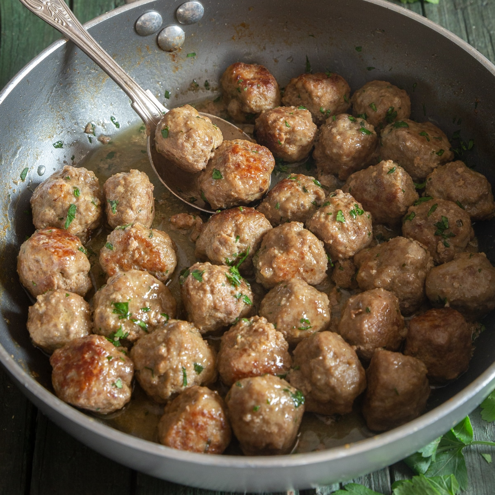

Meatball recipe

Ingredients
- 1lb lean (at least 80%) ground beef
- 1/2 cup Progresso™ Italian-style bread crumbs
- 1/4 cup milk
- 1/2 teaspoon salt
- 1/2 teaspoon Worcestershire sauce
- 1/4 teaspoon pepper
- 1 small onion, finely chopped (1/4 cup)
- 1 egg
Steps
- Heat oven to 400°F. Line 13x9-inch pan with foil; spray with cooking spray.
- In large bowl, mix all ingredients. Shape mixture into 24 (1 1/2-inch) meatballs. Place 1 inch apart in pan.
- Bake uncovered 18 to 22 minutes or until temperature reaches 160°F and no longer pink in center.